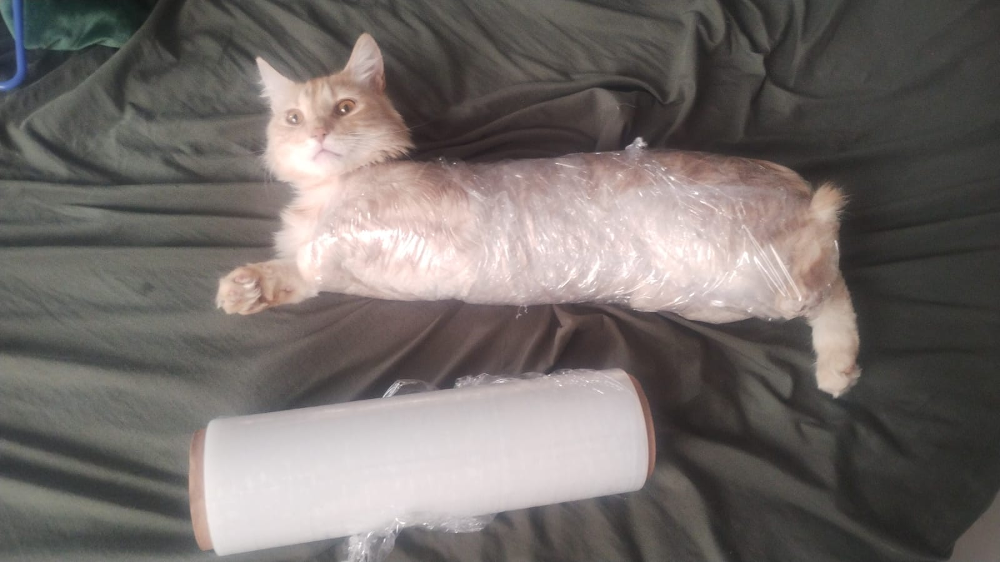

Biographie

Parcours
Né à Issy-les-Moulineaux, Frédéric Barraud a fait carrière comme contrôleur aérien à la DGAC avant de s'installer au Pérou. Entrepreneur dans le secteur des jeux pour enfants, il est marié à une professeure de l'Université San Marcos. Son engagement pour l'éducation l'a conduit à se présenter aux élections du collège franco-péruvien.
Engagement
Il souhaite impulser un renouveau dans la gestion de l'établissement, en favorisant le dialogue, l'innovation pédagogique et le bien-être des élèves.